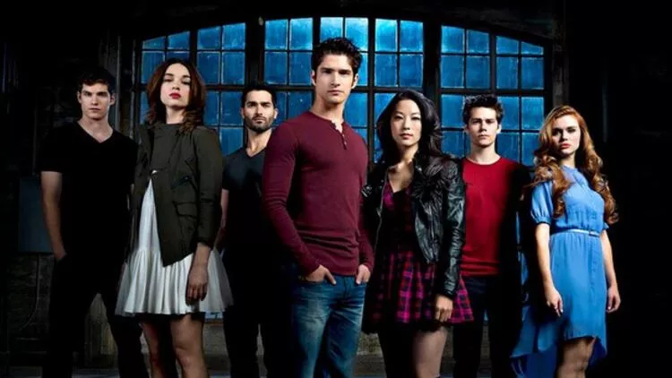
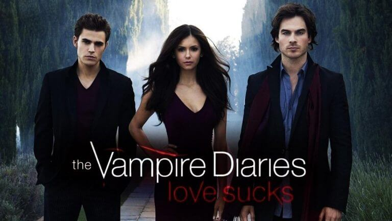

en sevdiğim diziler

Teen Wolf, ABD yapımı bir fantastik gençlik dizisidir. 1985 yapımı aynı adlı filmden esinlenerek hayata geçirildi. 2011 MTV Film Ödülleri'nin ardından 5 Haziran 2011'de ilk gösterimini yaptı.[1] Teen Wolf, Scott McCall (Tyler Posey) adında bir lise öğrencisinin ormanda dolaşırken bir kurt adam ısırılması sonucu yaşadıklarını anlatan doğaüstü draması. Scott, bir kurt adam olduğu gerçeğini, hayatı ve vücudundaki değişiklikler konusunda ona yardımcı olan en iyi arkadaşı Stiles Stilinski (Dylan O'Brien) ve bir diğer gizemli kurt adam Derek Hale (Tyler Hoechlin) dışında herkesten saklayarak sıradan bir yaşam sürmeye çalışır.

Vampir Günlükleri (The Vampire Diaries) L. J. Smith.'in The Vampire Diaries isimli kitap serisinden, "Dawson’s Creek" dizisinin de yazarlarından olan Kevin Williamson ve gösterimden kaldırılan "Kyle XY" dizisinin yazarlarından olan Julie Plec tarafından uyarlanan televizyon dizisidir.

La casa de papel, Álex Pina tarafından yaratılan İspanya yapımı bir soygun ve suç dizisi. Dizi, "Profesör" liderliğindeki ekibin İspanya Kraliyet Darphanesi'ni ve İspanya Merkez Bankası'nı soymasını konu edinir.